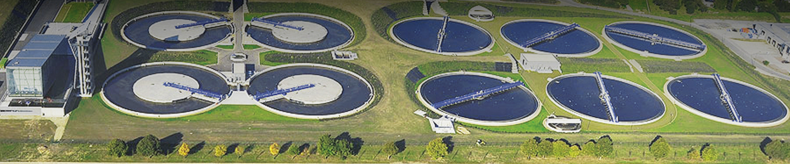
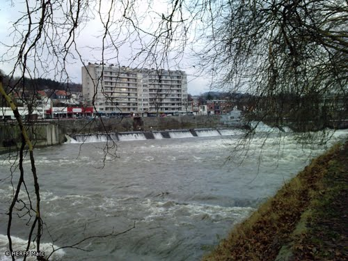

Les activitées proposées par Aqualis
Par des ateliers d'échange et des visites, vous apprendrez des astuces pour un usage rationnel de l'eau à la maison.
et des trucs pour diminuer la consommation des radiateurs ou des appareils électriques.
Nos animations
Elles s'adressent principalement aux demandeurs d'asile ainsi qu'aux stagiaires FLE de l'asbl Le Monde des Possibles avec qui nous sommes partenaires.
- Sensibilisation à la réduction de la consommation énergétique en général : réflexion sur la consommation actuelle des personnes dans leur Centre d’accueil, recherche d’astuces et bonnes pratiques pour réduire cette consommation ( Projet Dazibao )
Grâce à l'intervention de l'asbl ECOCONSO pour les aspects plus techniques, les apprenants peuvent bénéficier d'astuces et bonnes pratiques pour la gestion de l'eau au niveau de leur logement.
Nos précédents ateliers
Le projet Aqualis propose des séances d'informations et de formation à un usage respectueux de la nature et financièrement soutenable par rapport aux futures ressources des familles demandeuses d'asile, lorsqu'elles sortiront du Centre d'hébergement. Il s’agit d’améliorer significativement les conditions de vie des réfugiés en les sensibilisant aux questions de précarité hydrique et de coût des énergies.
Initiation à la plomberie : détection et réparation de fuites d’eau (robinet et chasse d’eau) avec l’ASBL « Les Débrouillardes »
Atelier thématique sur l'environnement avec l’ASBL « Empreintes »
Services
- prêt d'outil
- service social
Les témoignages
De part leurs implications dans les ateliers, les visites guidées ou la participation aux conférences les apprenants ont pu mieux contrôler leur consommation d'énergie. Voici un témoignage .
Une visite guidée
Nos stagiaires auront la possibilité de visiter différentes infrastructures comme :
- Visite de la station d’épuration des grosses Battes à Liège.
